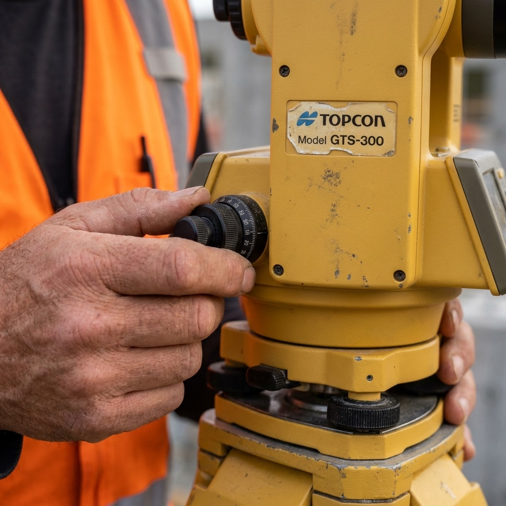
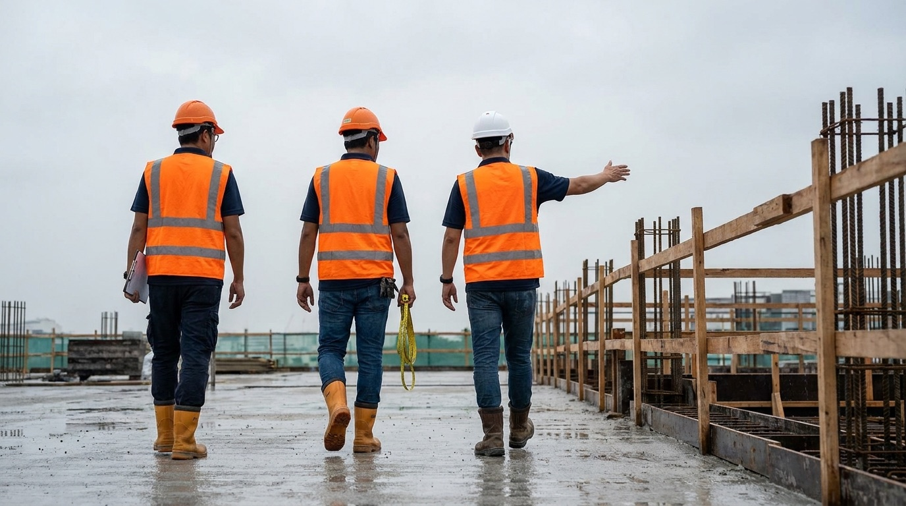
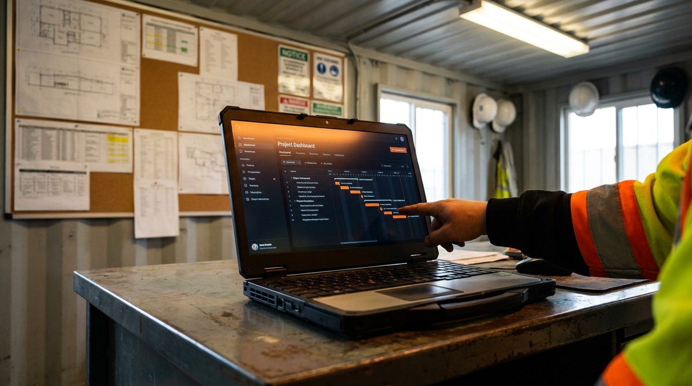

From flexible RE/RTO time-and-attendance supply, through full BCA-licensed firm engagement, to subsidised supervisor training. Each tier maps to a distinct buyer in the value chain. The Train tier is structurally distinct from any Tier-3 competitor — no other firm operates an in-house WSQ-approved training school.
For Tier 1–3 consultancies needing flexible capacity; mid-sized main contractors.
Client owns the QP(S) and the engineering opinion. We own the employment relationship, payroll, MOM compliance, JAC accreditation maintenance, and a replacement-on-demand SLA. We absorb foreign-worker quota mechanics, levy administration, and CPD/STU tracking.
| Component | Reference rate | Notes |
|---|---|---|
| RTO (junior, 2–4 yrs) | S$8,500 / month | Tier-3 firm rate |
| RTO (senior, 5+ yrs) | S$9,000–9,200 / month | Soft-launch S$8,800; step-up M7 |
| RE (degree, 3–5 yrs) | S$13,000 / month | Tier-3 firm rate |
| Senior RE / Lead | S$15,500 / month | Project lead-track |
Mid-sized developers, BCA-listed contractors on S$10–75M projects, institutional owners.
Our seconded QP(S) — a Senior PE — signs off. The client receives a single point of accountability, weekly reporting dashboard, and structured non-conformance escalation. We absorb supervisor scheduling, replacement risk, and CPD compliance.
Major developers, public-sector tendering agencies, complex projects (PPVC, advanced steel, deep basement, façade).
From 2027/28 onward — applicable to all building projects above S$75M. Includes ISO/IEC 17020 inspection-body framework, technology-enabled remote supervision, formal Site Supervision Plan authorship, and SAC-accredited measurement-equipment calibration.
ISO/IEC 17020 alignment, document management with 7-year retention, redundant storage. Fully integrated with Elitez Group's ISO 9001 / 27001 stack.
PE (Civil) with 3+ years' QP experience. Two additional QPs as permanent staff with QP(D) submissions in the last 3 years.
1 RE + 3 RTOs (or 30% of total RE/RTO headcount) employed for ≥12 consecutive months. Pure body shops cannot satisfy this.
Video taking/streaming for remote RE/RTO viewing. SAC-accredited calibrated measurement technologies. Digital storage & visualisation platform.
Construction firms upskilling supervisors at subsidised cost; clients of Supply/Manage seeking value-add; recruitment funnel.
Pre-employment BCSS-aligned conversion programmes. JAC-recognised CPD courses (subject to JAC course approval). Developer-specific upskilling on PPVC, post-tensioning, and structural steel. Eligible for SSG funding of 50–90% of course fees.
No Tier-3 site supervision competitor in Singapore — RCY, CKMBT, GeoAlliance, Rankine & Hill, RJ Crocker — operates an in-house WSQ-approved training school. Greenfield equivalent: 12–18 month SSG application + S$150K curriculum + Approved Training Organisation audit.
Site formation, demolition, concreting, pre-stressing, piling, ERSS, superstructure, barrier and ancillary works.
| Discipline | Role mix | Margin profile | Notes |
|---|---|---|---|
| C&S RE / RTO | Civil & structural | 19% Y3 baseline | Core deployable headcount. |
| Architectural RTO | Façade, finishes, defects walk | 18–20% | Smaller volumes, consistent demand. |
| M&E RTO / RE | Mechanical, electrical, ACMV, fire protection | +5–8 ppt vs. C&S | Industrial & datacentre projects. |
| Specialist competencies | PPVC · post-tensioning · structural steel · geotechnical · tunnelling | +20–35% premium | Year 2 onward via Adept Academy partnerships with BCA Academy. |
Talk to us about Year-1 deployment slots. Soft-launch pricing for the first three referenceable accounts (Months 1–6).
Six frames from working sites: Supply (theodolite levelling), Manage (RE-led pre-pour walk-through · weekly digital reporting · concrete pour QC), Certify (QP(S) sign-off · welder mid-arc) — the operational reality behind the four packaged offerings.


